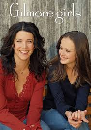

"Gilmore Girls", uma série que estreou em 2000, rapidamente conquistou corações ao redor do mundo com sua mistura única de humor inteligente, diálogos rápidos e personagens cativantes. Criada por Amy Sherman-Palladino, a série é centrada na relação especial entre mãe e filha, Lorelai e Rory Gilmore, vividas brilhantemente por Lauren Graham e Alexis Bledel.
Ambientada na pitoresca cidade fictícia de Stars Hollow, Connecticut, "Gilmore Girls" captura não apenas o vínculo forte entre Lorelai, uma mãe jovem e independente que teve Rory aos 16 anos, e sua filha inteligente e ambiciosa, mas também a dinâmica entre os moradores excêntricos de Stars Hollow. Desde o adorável e peculiar dono da pousada, Luke Danes, interpretado por Scott Patterson, até a excêntrica mãe de Lorelai, Emily Gilmore, interpretada por Kelly Bishop, cada personagem contribui para o colorido da série.
Um dos elementos mais distintivos de "Gilmore Girls" é seu estilo de diálogo rápido e cheio de referências culturais, que se tornou uma marca registrada da série. Os episódios são pontuados por conversas ágeis entre Lorelai e Rory, que vão desde discussões sobre filmes clássicos até reflexões profundas sobre amor, amizade e família.
Ao longo de suas sete temporadas, "Gilmore Girls" abordou temas como relações familiares complexas, crescimento pessoal, ambições profissionais e os altos e baixos do amor. A série capturou a essência da vida em uma pequena cidade enquanto explorava as jornadas individuais de seus personagens principais e secundários.
Além disso, "Gilmore Girls" teve um revival em 2016 com a minissérie "Gilmore Girls: A Year in the Life", que trouxe de volta os personagens queridos para explorar suas vidas uma década após o final da série original. Este revival foi recebido com entusiasmo pelos fãs, proporcionando um fechamento adequado para muitas das histórias que cativaram o público durante anos.
Lauren Graham como Lorelai Gilmore